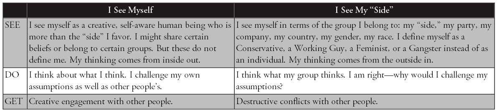

Synergy

Most conflicts are two-sided (Black or White). The 1st Alternative is my way, the 2nd Alternative is your way. By synergizing, we can go on to a 3rd Alternative---our way, a higher and better way to resolve the conflict.
-
Without synergy: 1 + 1 \< 2
-
With synergy: 1 + 1 > 2
The natural principle that the whole is greater than the sum of the parts. Rather than going my way or your way, we take the path of synergy to higher and more productive results. You and I together are far greater than we are alone.

Our paradigms govern our behavior, which in turn governs the consequences of our actions. We GET results based on what we DO, and what we DO depends on how we SEE the world around us.
4 step process of 3rd alternative thinking

To arrive at a 3rd Alternative, I must first practice self-awareness and value the different viewpoint that you represent. Then I must seek to understand that viewpoint thoroughly. Only then can we move up to synergy.

I see myself
Seeing myself as a unique human being capable of independent judgment and action. I am not merely "my side" of a controversy. I am more than the sum of my prejudices, party, and preconceptions. My thoughts are not predetermined by my family, my culture, or my company. I can mentally stand apart from myself and evaluate how my paradigms are influencing my actions.
I see myself as a creative, self-aware human being who is more than the "side" I favor in a conflict. I might share certain beliefs or belong to certain groups, but these do not define me. I choose my own "story."

-
What's my story? Do I need to change the script?
-
Where might I have blind spots about myself?
-
How has my cultural programming influenced my thinking?
-
What are my real motives?
-
Are my assumptions accurate?
-
In what ways are my assumptions incomplete?
-
Am I contributing to an outcome---an end to the story---that I really want?
I see you
This is about seeing others as people instead of things. When we look at others, what do we see? Do we see an individual, or do we see age, gender, race, politics, religion, disability, national origin, or sexual orientation? Do we see a member of an "out group" or an "in group"? Or do we really see the uniqueness, the power, the gifts of every diverse individual?
I See You. I see a whole human being unlike any other, a person of innate worth, endowed with talents, passions, and strengths that are irreplaceable. You are more than your "side" in a conflict. You deserve dignity and my respect.
I seek you out
This paradigm is about deliberately seeking out conflicting views instead of avoiding or defending yourself against them.
If a person of your intelligence and competence and commitment disagrees with me, then there must be something to your disagreement that I don't understand, and I need to understand it. You have a perspective, a frame of reference I need to look at.
Instead of seeing your different viewpoint as a threat, I avidly seek to learn from you. If a person of your character and intelligence differs from me, I need to listen to you. I listen empathically until I genuinely understand you.
The heart of each one is tender, and when we touch that tenderness, we are in a sacred place.

"I Seek You Out" starts with the principle that truth is complicated and that everybody likely has a little slice of it. "Truth is never pure and rarely simple," said Oscar Wilde. No one has it all. 3rd Alternative thinkers recognize that the more slices of truth they have, the more they see things as they really are. So these thinkers deliberately seek out different slices of truth. If you have truth that I don't have, why wouldn't I come and find you so you can teach me?
Talking stick

The Talking Stick. An ancient Native American tradition, the Talking Stick is a symbol of peaceful communication. So long as the speaker holds the stick in hand, no one may interrupt until the speaker feels heard and understood.
Whoever holds the Talking Stick has within his hands the sacred power of words. Only he can speak while he holds the stick; the other council members must remain silent. The eagle feather tied to the Talking Stick gives him the courage and wisdom to speak truthfully and wisely. The rabbit fur on the end of the stick reminds him that his words must come from his heart and that they must be soft and warm. The blue stone will remind him that the Great Spirit hears the message of his heart as well as the words he speaks. The shell, iridescent and ever changing, reminds him that all creation changes---the days, the seasons, the years---and people and situations change, too. The four colors of beads---yellow for the sunrise (east), red for the sunset (west), white for the snow (north) and green for the earth (south)---are symbolic of the powers of the universe he has in his hands at the moment to speak what is in his heart. Attached to the stick are strands of hair from the great buffalo. He who speaks may do so with the power and strength of this great animal.
Empathic Listening. In a conflict, we are usually thinking about our own rebuttals and responses while the other person talks. We can't hear each other through that "wall." By contrast, an empathic listener seeks to understand the thoughts and feelings of the other.
Unless you've understood me, with my points and my feelings so well that you could make my argument for me---you haven't actually heard anything.
In the paradigm "I Seek You Out," I argue with you to try out ideas, not to impose them. I use argument as a vehicle for learning, not as a weapon. My purpose is not to score points on you in the weary old game of one-upmanship but to change the game.
Steps
-
Go to the other side and say, "You see things differently. I need to listen to you."
-
Pay the price to understand. Give your full attention. Don't multitask while you're listening. Don't judge, evaluate, analyze, advise, toss in your footnotes, commiserate, critique, or quarrel. The speakers don't need you on their side. All they need is your positive regard for them.
-
Be quiet. You don't have to provide an answer, a verdict, a solution, or a "fix." Free yourself from all that pressure. Just sit back and listen.
-
Speak only to keep the flow going. Say things like "Tell me more," "Go on," or just "Hm."
-
Pay close attention to emotions. Affirm feelings: "You must feel (sorry, angry, hurt, worn out, anxious, disappointed, baffled, confused, betrayed, unsure, suspicious, skeptical, worried, frustrated) about this."
-
Use a Talking Stick---literally or figuratively---if that will help.
-
Remember, you're listening to a story. When you go to a movie, you don't interrupt and argue with the story and talk back to the screen. (If you do, you'll be asked to leave---and good riddance!) You're involved, your sense of reality is suspended, you're almost in a trance.
-
Be ready to learn. If you're open, you'll gain insights that will light up your own mind and complement your own perspective. Changing your viewpoint due to more data is natural---it is not a sign of weakness.
-
Make sure you really do understand. If necessary, tell the story back to the storyteller. Restate what you thought you heard. Talk about the feelings you perceived. Ask if he feels that you have thoroughly understood where he's coming from. If not, try again until he is satisfied.
-
Show some gratitude. It's a great compliment to be invited into the mind and heart of another human being. And it's a real benefit to you because you've grasped a slice of truth you didn't understand before.
I Synergize With You
This last paradigm is about going for a solution that's better than anyone has thought of before, rather than getting caught up in the cycle of attacking one another. Once we understand each other fully, we are in a position to go for synergy, to find a solution that is better than anything we've come up with individually. Synergy is rapid, creative, collaborative problem solving.

Steps to synergy
Step 1: Ask the 3rd Alternative Question
The first step in the synergy process is to ask the 3rd Alternative Question: "Are you willing to go for a solution that is better than either one of us has in mind?"
Step 2: Define Criteria of Success
Step 3. Create 3rd Alternatives
Step 4: Arrive at Synergy
Values
-
Beware of pride. Let go of needing always to be "right." Your grasp on reality is always partial anyway. Allow yourself to achieve the important breakthroughs in relationships and creative solutions that will never likely be realized if you stubbornly hold on to being "right."
-
Learn to say "I'm sorry." Do it quickly once you realize you've fallen short or hurt someone. Be sincere and don't hold back. And don't go just half way. Apologize fully, take responsibility, and express your desire to understand.
-
Be quick to forgive perceived slights. Remember, you choose whether or not to be offended. If you feel offended, let it go.
-
Make and keep very small promises to yourself and others. Take baby steps. As you create a pattern of doing so, make and keep bigger promises. Your own integrity will become your greatest source of security and strength.
-
Spend time in nature. Go on long walks. Create space in your life every day for reflection on the synergies of the world around you.
-
Read widely---it's one of the best ways to make mental connections and get insights that can lead to 3rd Alternatives.
-
Exercise often, each day if possible; and eat healthy food, with balance and moderation. The body is the instrument of the mind and spirit.
-
Get enough sleep, at least 7 to 8 hours daily. Science tells us that the brain grows new connections during sleep, which is why we often awake with sparkling new ideas. And you'll find yourself so much more able to give the emotional, mental, and spiritual energy needed to create 3^rd^ Alternatives.
-
Study inspiring or sacred literature. Ponder, meditate, or pray. Insights will come.
-
Make quiet time for yourself to think through creative 3rd Alternative solutions to your challenges.
-
Express love and appreciation to those with whom you associate. Listen empathically to them. Devote time to learning about them, what is important to them, what is their story.
-
You have two ears and one mouth: use them proportionally.
-
Practice being generous with others---with your time, your heart, your forgiveness, and your affirmation. Be wise and generous in sharing your resources with those in need. Be generous with and forgive yourself. We all have weakness. We all have strength. Look to the future and move on. All these things will cultivate within you a spirit of abundance.
-
Avoid comparing yourself to others. Just don't. You are unique. You are of infinite worth and have great potential. Define your own exceptional mission in life. Just be true to it, be yourself, and serve others and the world simply and magnificently!
-
Be grateful. Express it.
-
Learn to become enthusiastically relentless about discovering how to create great wins for others---wins that increase their peace, their happiness, and their prosperity. It will become infectious, and you may often find others seeking the same for you. This is the key to producing remarkable synergies.
-
When things aren't going well, take a break, take a walk around the block, get a good night's sleep, and come back at it with the freshness and perspective of a new day.
-
If you truly can't reach win-win, remember that "no deal" in some cases is the best alternative.
-
When it comes to other people, their reactions, their weaknesses, and peculiarities, just smile a lot. And when it comes to your teenagers, remind yourself, "This, too, shall pass."
-
Never stop believing in the possibility of the 3rd Alternative.